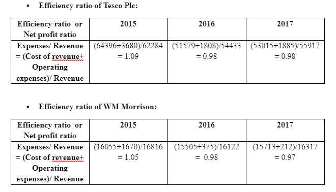
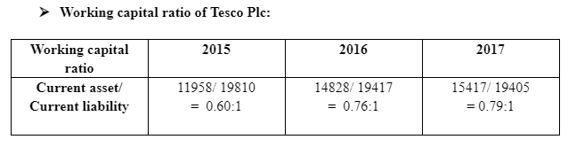
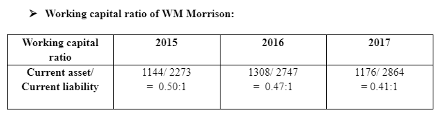

Financial Accounting: A case study on Tesco Plc., and WM Morrison
Introduction
Financial accounting is the accounting system through which the researcher collects the financial data and develop balance sheet and income statement if the companies in order to analyse the organisational performance (Andon, Baxter and Chua, 2015). Through financial accounting process, the corporate firms can measure the organisational performance, reduce managing cost, and improve the management strategy of the companies in order to achieve the organisational pre-specified goals and objectives. The aim of this study is o evaluate the organisational performance of Tesco Plc., and WM Morrison through financial accounting system and calculation the ratios such as profitability, efficiency ratio and working capital ratio. Through financial accounting, it is also possible to evaluate the income, cost and benefit and operating profitability of the companies which are useful to analyse the performance of the organisations.
Background of the companies
Tesco Plc. is famous British multinational retail merchandise, headquartered in London. The company is successful in providing quality products and services to the customers after identifying the needs and preferences of the local people. There are huge variety of products including food, clothing, electronics, home wares and others where the brand sells their products through supermarkets, hypermarkets and superstores (Tesco PLC, 2018a). The quality products and affordable price of the company further help the manager to retain more corporate clients and build strong corporate relationship with all the stakeholders. The company is concerned about the value for all the stakeholders where the managers try to meet the requirements of the stakeholders including employees, shareholders, customers, mangers. Recently there are more than 476000 employees and the company operates through 65553 stores across the international places (Tesco PLC, 2018b). The revenue of the company in 2017 was £55917 million (Tesco PLC, 2018c).
WM Morrison is another largest chain of supermarkets and the company operates through more than 498 stores (Morrison, 2018a). The revenue of the company in the last year was approximately £16317 million (Morrison, 2018b). The number of employees of the company is more than 132000 and the company is successful in running their business operations across England, Scotland and Wales. The products of the company are food and drinks, books, magazines, electronic products and clothing. The market share of the company Tesco Plc is larger as compared to the company WM Morrison (Morrison, 2018c). The customer’s base as well as brand image is also higher in Tesco Plc than the company WM Morrison. Both the organisations try to maximise their profitability by delivering quality products and efficient services to the customers. The companies are also responsible for providing high rate of return to the investors and shareholders for retaining them in long run and ruining the organisations sustainably.
Groups of users of the financial statement
There are two types of stakeholders, external and internal. Customers, government and society as well as suppliers and distributors are the external stakeholders. On the other hand, the internal stakeholders are employees, CEO, directors, shareholders, managers and other internal staff members (Harrison and van der Laan Smith, 2015). In the recent years, the organisations try to engage all the stakeholders for running the sustainably by ensuring transparency and accountability. The group of employees in the companies is one of the main groups who are users of financial statement of the company (Andon, Baxter and Chua, 2015). The purpose of employees in identifying the financial statement is to ensure the organisation can maximise profit and motivate the employees through providing effective salary and other benefits (Harrison and van der Laan Smith, 2015). Without the maximisation of profitability volume of the company as well as financial asset, the companies cannot meet the employee’s requirements. Hereby, in order to ensure the fulfilment of the needs and preferences of the employees, they try to use the past financial data of the company to secure the job and enjoy the benefits of working in the particular organisation (Harrison and van der Laan Smith, 2015).
The second group is the investors where it is necessary to assess the financial data of the companies Tesco and Morrison in order to ensure whether they can get higher return on their investment or not. The third group is the shareholders who are also looking for the profitability, cash flows and asset of the organisations to make effective investment decision (Harrison and van der Laan Smith, 2015). In addition to these, the group of managers, board members and the financial institution are also the other three groups who are the users of the financial statement of the companies Tesco Plc and WM Morrison so that they are able to evaluate the performance of the organisation (Andon, Baxter and Chua, 2015). The managers can analyse the current performance of the company by reviewing the financial data of the company as well as it further motivate them to develop further strategic planning for future in order to achieve the organisational goals strategically (Harrison and van der Laan Smith, 2015). In addition to these, the board members are important stakeholders for both the companies including Tesco Plc and WM Morrison where they try to analyse the financial data in order to evaluate the performance of the organisations.
Purposes of using the financial statement
The evaluation of the performance in past years can be possible to be evaluated by the stakeholders group and in this regard they try to use the financial data of the companies so that they can evaluate the performance (Andon, Baxter and Chua, 2015). It further helps the stakeholders group to predict the future performance and profitability of the companies where the experience of the stakeholders are gathered from the past performance of the organisation which can be don ion the basis of financial statement of that particular organisation (Harrison and van der Laan Smith, 2015). The stakeholders are also engaged with the business process and it is the responsibility of all the stakeholders to provide opinion as well as being empowered in the organisational decision making behaviour so that they can develop effective strategic decision which will be helpful for the organisations like Tesco and Morrison (Andon, Baxter and Chua, 2015). Hereby, the use of financial statement of the brand is advantageous for developing effective strategic planning through which the companies can maximise their profitability and improve resources and capabilities of the companies in performing proficiently (Harrison and van der Laan Smith, 2015).
The financial institutions and government are also looking for the income statement of the organisations in order to analyse whether the companies are successful in improving GDP of the country or not (Andon, Baxter and Chua, 2015). In addition to these, the government is also the user of the financial statement of the companies as the government of the particular country tries to evaluate the contribution of the firms in the society for successful social and economic development (Harrison and van der Laan Smith, 2015). The employees are also another effective users of the organisation where they try to evaluates the profitability and revenue volume of the companies to ensure that whether the companies can fulfil the requirements for the employees or not. Hereby, the financial statement of the companies Tesco and Morrison are helpful for their stakeholders to analyse the current position of the organisations as well as it further provides an opportunity to the policy makers and mangers to develop effective strategic planning for achieving the organisational goals and objectives proficiently (Harrison and van der Laan Smith, 2015).
Ratio calculations
In order to calculate the ratios, the income statement of both the companies are collected (Refer to appendix 1 and 2). Apart from that the balance sheet of both the companies are also considered in order to0 gather the financial data in the last three years (Refer to appendix 3 and 4).
The efficiency ratio is effective to analyse the effectiveness and efficiency of the companies to utilise the resources and capabilities and generate sales volume. Through efficiency ratio, it is also possible for the evaluating the way of transforming asset into revenue as well as it also helps to assess whether the company is successful in creating shareholders value (Morning Star, 2018a). As per the table above, the efficiency ratio of both the companies is decreasing over the years and it indicates that the organisations fails to utilise their resources to generate high revenue and sales volume.
 Working capital is another indicator of firm’s performance and the ration between 1.2 and 2 is considered as moderate where the firms are successful in maximising their profitability. Working capital ratio of Tesco is increasing over the last three years where the company Morrison failed to increase the ration in the previous years. It further indicates that, Tesco can establish the company and there will be positive growth as the working capital ratio is moderate it is increasing over the past few years.
As per the profitability ratio, in 2016, the percentage of Tesco is positive but in 2015 and 2017, the ratios are negative. On the other hand, there was a positive ratio of profitability of WM Morrison in 2016 and 2017 which is effective for the Company to invest in more product development and researches so that the company can expand the business internationally.
Analysis of the organisational performance
The organisations Tesco and Morrison both have high markets share and brand reputation in the international retail industry. The company Tesco has positive growth rate and it can be predicted that the organisation can utilise the resource for securing future sustainable growth. Morrison is also improving their market share by retaining more corporate clients towards their products and services (Andon, Baxter and Chua, 2015). As per the working capital ratio, the company Tesco is efficient to utilise their resources and improve product variety through more research and development in order to strengthen their customer’s base.
The sales volume of the company Tesco is decreasing which indicates that the company is not efficient enough to retain their clients. The moderate value of the above mentioned ration also refers that the company needs to improve the internal efficiency in order to maximise their sales volume and profitability (Morning Star, 2018d). On the other hand, it has been shown that there was positive growth in the sales volume of Morrison which indicates that the efficiency of the brand is increasing and they are successful in creating values for their shareholders, customers and other stakeholders of the business (Andon, Baxter and Chua, 2015).
Conclusion
The financial accounting plays an important role in the organisation through which the internal and external stakeholders are trying to utilise the data for predicting future sustainability and performance o the companies. The sales volume is increasing in Morrison and the efficiency ratio as well as working capital ration of the company is effective which further indicates that the organisation has the potential to create values for the stakeholders. Tesco needs to improve its efficiency by encouraging the employees, providing technical training program as well as engage all the employees, shareholders and board members in the business to develop appropriate strategic planning so that the brand efficiency and performance can be improved in near future.